Overview
ggincerta is an extension of ggplot2 for visualising uncertainty in spatial data and, more generally, for constructing bivariate visualisations. It reimplements the visualisation methods for three map types introduced in the Vizumap package within the grammar of graphics, while also providing additional uncertainty visualisation approaches.
The package integrates directly with ggplot2 through custom scales, geoms, aesthetics, and guides. This allows uncertainty visualisations to be constructed, combined, and customised using the same workflow as conventional ggplot2 graphics.
Installation
# Install the release from CRAN:
install.packages("ggincerta")
# Install the development version from GitHub:
# install.packages("pak")
pak::pak("maggiexma/ggincerta")Usage
The example dataset included in ggincerta is an sf object adapted from the nc shapefile in the sf package. It contains two simulated variables, value and sd, which are used throughout the examples to demonstrate how regional estimates and uncertainty can be visualised simultaneously.
For more details on the original visualisation designs implemented from Vizumap, see https://doi.org/10.1002/sta4.150.
Bivariate colour map
ggincerta provides scale_*_bivariate() for constructing bivariate colour scales that can be used with duo() inside ggplot2 aesthetics. Two variables are discretised independently, and their crossed bin combinations are mapped to a two-dimensional colour grid.
By default, automatically generated breaks use breaks_pretty() on the transformed scale. The n_breaks argument specifies the desired number of bins, but when nice.breaks = TRUE, the actual number of bins may differ in order to produce more readable break values.
ggplot(nc) + geom_sf(aes(fill = duo(value, sd)))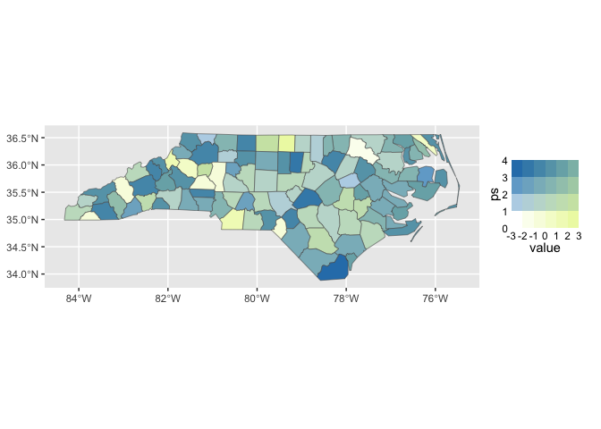
If an exact number of equal-width bins is required, set nice.breaks = FALSE. Quantile-based binning is also available by setting quantile = TRUE.
ggplot(nc) +
geom_sf(aes(fill = duo(value, sd))) +
scale_fill_bivariate(
n_breaks = 4,
nice.breaks = FALSE
)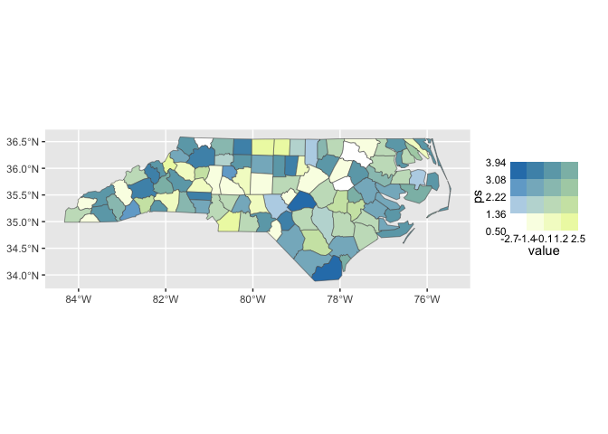
The default palette is generated by mixing two colour ramps. Alternative palette functions can be supplied through palette_fun. For example, bivar_fade_palette() can be used to emphasise one variable while progressively suppressing another perceptual dimension along the second axis.
ggplot(nc) +
geom_sf(aes(fill = duo(value, sd))) +
scale_fill_bivariate(
palette_fun = bivar_fade_palette,
colours = c("#F6E8C3", "orange", "red"),
palette_params = list(fade = "desaturate")
)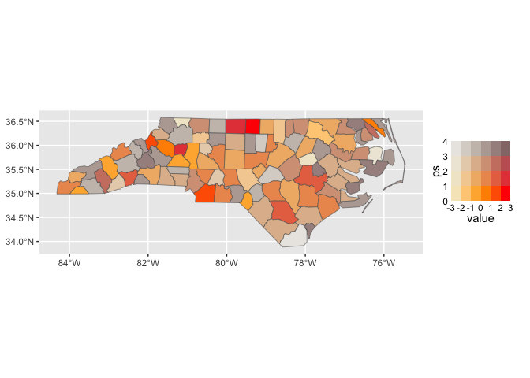
For complete control over the colour grid, ggincerta also provides manual bivariate scales. Manual scales use exact equal-width bins by default, so the number of required colours is determined directly by n_breaks.
Value-Suppressing Uncertainty Palettes (VSUPs), proposed by Correll et al. (2018), suppress value differences as uncertainty increases. In ggincerta, they are implemented through scale_*_vsup().
The uncertainty variable is divided into a hierarchy of layers, while the number of value bins varies across those layers according to the branch parameter. When breaks are not supplied, both value and uncertainty breaks are generated as equal-width intervals on the transformed scale.
ggplot(nc) +
geom_sf(aes(fill = duo(value, sd))) +
scale_fill_vsup()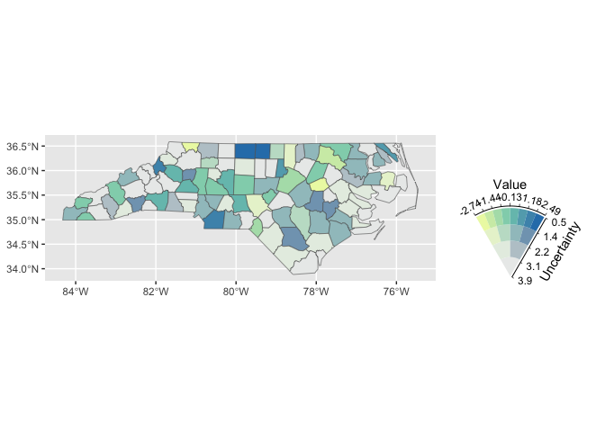
Custom breaks and limits can also be supplied explicitly.
ggplot(nc) +
geom_sf(aes(fill = duo(value, sd))) +
scale_fill_vsup(
breaks = list(
seq(-3, 3, length.out = 9),
seq(0, 4, length.out = 5)
),
limits = list(
c(-3, 3),
c(0, 4)
)
) +
theme(
legend.text = element_text(size = 7)
)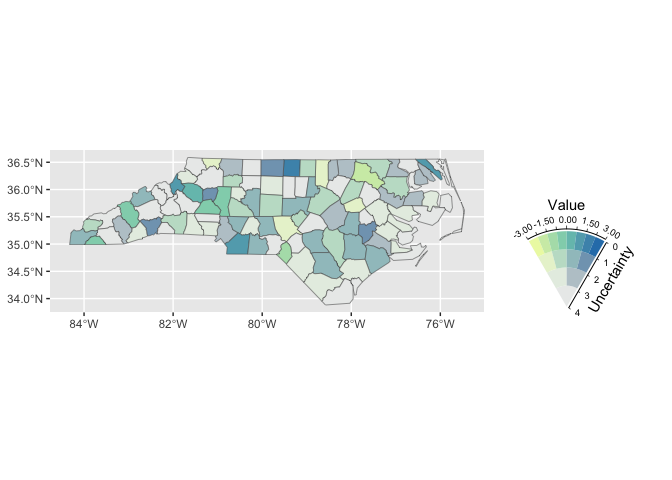
Pixel maps
ggincerta provides geom_sf_pixel() for constructing pixel maps. Each spatial unit is tessellated into pixels, with pixel values sampled from a specified probability distribution parameterised by the mapped variables.
Pixel grids can be generated using rectangular, square, or hexagonal cells, with hexagonal pixels used by default. Variation in pixel colours within a region provides a visual representation of uncertainty while retaining the spatial pattern of the underlying estimate.
Because pixel generation relies on geometric intersection, computation can be slower when working directly with geographic sf objects under the s2 geometry system. For improved performance, it is recommended to first transform the data to a projected planar coordinate reference system.
nc_flat <- sf::st_transform(nc, 3857)
ggplot(nc_flat) +
geom_sf_pixel(
mapping = aes(fill = duo_pixel(value, sd)),
seed = 123
)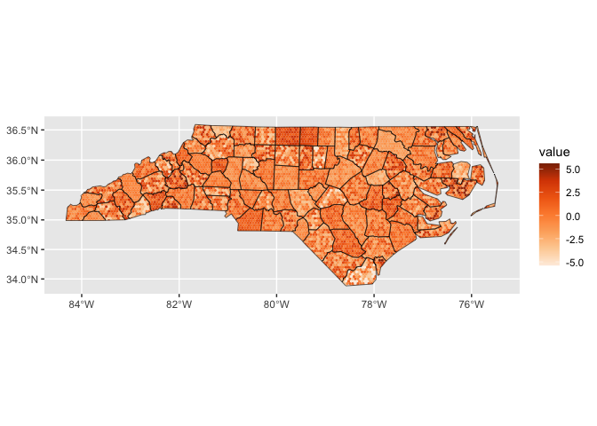
The pixel shape and resolution can also be customised by pixel_shape.
ggplot(nc_flat) +
geom_sf_pixel(
mapping = aes(fill = duo_pixel(value, sd)),
pixel_shape = "square",
n = 30,
seed = 123
)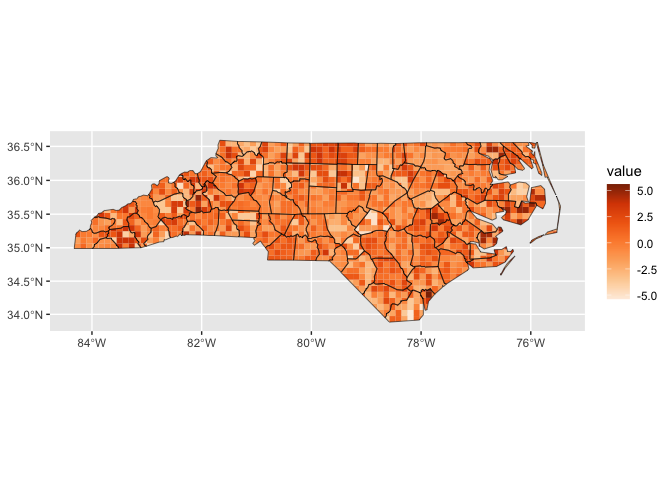
Glyph maps
Glyph maps use additional graphical marks placed at spatial centroids to represent value and uncertainty. ggincerta provides several glyph forms through geom_sf_glyph().
Regular shapes such as circles, squares, triangles, and hexagons can be used with bivariate colour scales.
ggplot(nc_flat) +
geom_sf_glyph(
mapping = aes(colour = duo(value, sd))
)
#> Warning: st_point_on_surface assumes attributes are constant over geometries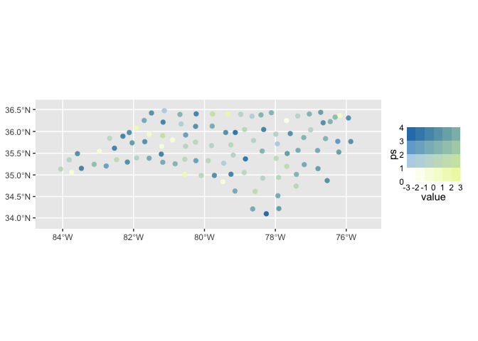
Drop-shaped glyphs provide an alternative encoding in which uncertainty can be represented by rotation through the angle aesthetic.
ggplot(nc_flat) +
geom_sf_glyph(
aes(colour = value, angle = sd),
shape = "drop"
)
#> Warning: st_point_on_surface assumes attributes are constant over geometries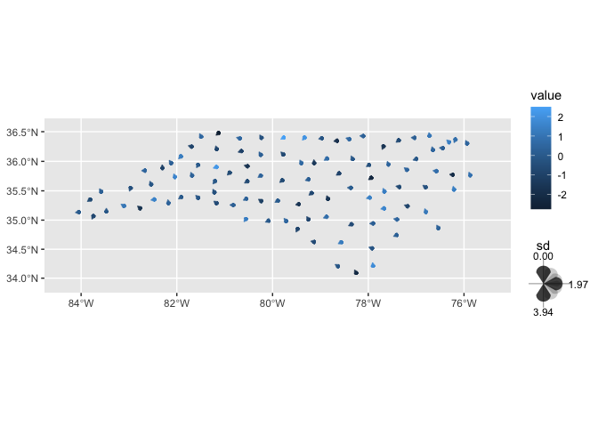
Chernoff faces provide another glyph form for multivariate encoding. The implementation in ggincerta builds on the grob and scale design provided by the ggChernoff package. In the example below, facial colour represents the estimated value, while facial expression represents uncertainty: lower uncertainty produces smiling faces, whereas higher uncertainty produces frowning faces.
ggplot(nc_flat) +
geom_sf_glyph(
aes(colour = value, smile = sd),
shape = "chernoff"
)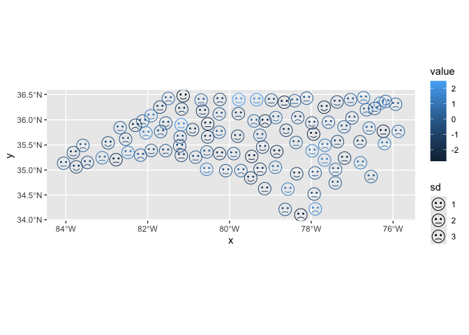
Dual map
The dual map combines a conventional choropleth layer with a glyph layer in the same spatial display. The two layers can use separate aesthetics, scales, and guides, allowing the primary variable and uncertainty to remain visually distinct and directly interpretable.
A simple dual map can, for example, map uncertainty to polygon fill and the estimated value to glyph colour.
ggplot(nc_flat) +
geom_sf_dualmap(
aes(fill = sd, colour = value)
)
#> Warning: st_point_on_surface assumes attributes are constant over geometries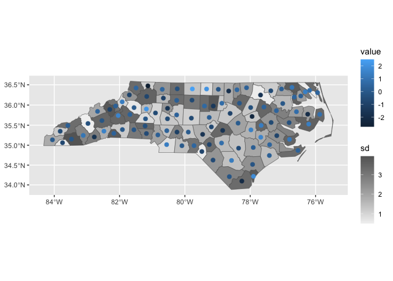
Because the choropleth and glyph components are layered within the ggplot2 system, they can also be combined with bivariate mappings. This makes it possible to encode an additional variable through duo() while retaining a separate glyph-based representation.
ggplot(nc_flat) +
geom_sf_dualmap(
aes(
fill = duo(value, sd),
colour = value
)
) +
scale_colour_gradient(low = "grey95", high = "grey40") +
scale_fill_bivariate()
#> Warning: st_point_on_surface assumes attributes are constant over geometries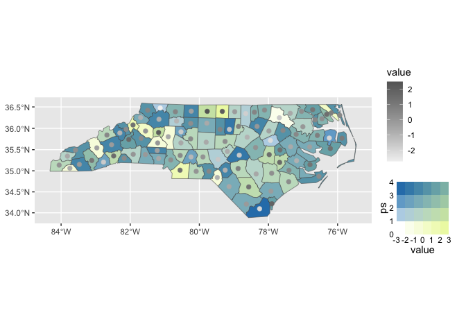